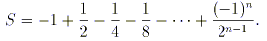
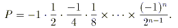
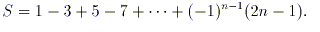
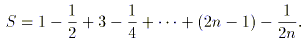

| Контрольная работа. Раздел 2. Базовые конструкции языка программирования. Тема 2.1. Операторы языка программирования. | ||
| Назад | ||
|
Решить задачи вариана. Отчет выполнить в Word. Для каждой задачи привести словесное описание алгоритма задачи. Привести код решения с комментариями. Выполнить тест. К отчету приложить файл программы.( Program.cs или KontrRab.dpr). Решение выполнить в Pascal или C#. Переменные ввести с клавиатуры. Вариант 1. 1. Дано трехзначное число. Переставьте первую и последнюю цифры. 2 Вычислить сумму  Вариант 2. 1. Дано пятизначное число. Цифры на четных позициях занулить. Например, из 12345 получается число 10305. 2 Вычислить произведение  Вариант 3. 1. Дано четырехзначное число. Если оно читается слева направо и справа налево одинаково, то вывести yes, иначе no. 2. Вычислить сумму  Вариант 4. 1. Даны два трехзначных числа. Получите новое число присоединением второго числа справа к первому без последних цифр у каждого. Например, 123 и 456 Ответ: 1245 2. Вычислить сумму Вариант 5. 1. Дано четырехзначное число. Верно ли, что цифр в нем расположены по убыванию? Например, 4311 - нет, 4321 - да, 5542 - нет, 5631 - нет, 9871 - да. 2 Вычислить произведение Вариант 6. 1. Даны два трехзначных числа. Найдите шестизначное число, образованное из двух данных чисел путем дописывания второго числа к первому справа. 2. Вычислить сумму Вариант 7. 1. Дано четырехзначное число. Переставьте местами цифры так, чтобы сначала оказались цифры, меньшие пяти. 2. Вычислить сумму Вариант 8. 1. Дано две даты, каждая из которых состоит из трех чисел (день, месяц и год). Вывести yes, если первая дата раньше второй, иначе вывести no. 2. Вычислить сумму Вариант 9. 1. Пользователь вводит два числа. Если они не равны 10 и первое число четное, то вывести их сумму, иначе вывести их произведение. 2. Вычислить сумму 
|
||
| Конспект подготовлен Бакулиным А. М. 2022 год. | ||